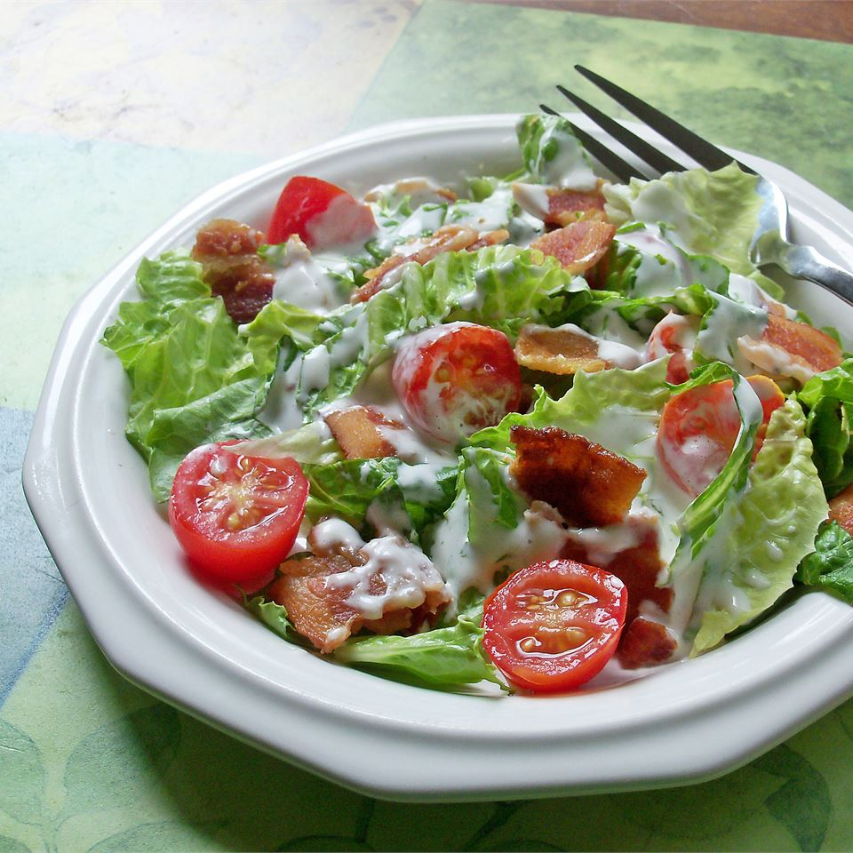

BLT Salad

Description
This recipe is reminiscent of the classic BLT or bacon, lettuce, and tomato sandwich. It's a great summertime salad!
Ingredients
- 1 pound bacon
- ¾ cup mayonnaise
- ¼ cup milk
- 1 teaspoon garlic powder
- ⅛ teaspoon ground black pepper
- salt to taste
- 1 head romaine lettuce - rinsed, dried and shredded
- 2 large tomatoes, chopped
- 2 cups seasoned croutons
Steps
-
Place bacon in a large, deep skillet. Cook over medium high heat, turning frequently, until evenly browned. Drain, crumble and set aside.
-
In a blender or food processor, combine mayonnaise, milk, garlic powder and black pepper. Blend until smooth. Season the dressing with salt.
-
Combine lettuce, tomatoes, bacon and croutons in a large salad bowl. Toss with dressing, and serve immediately.
Home